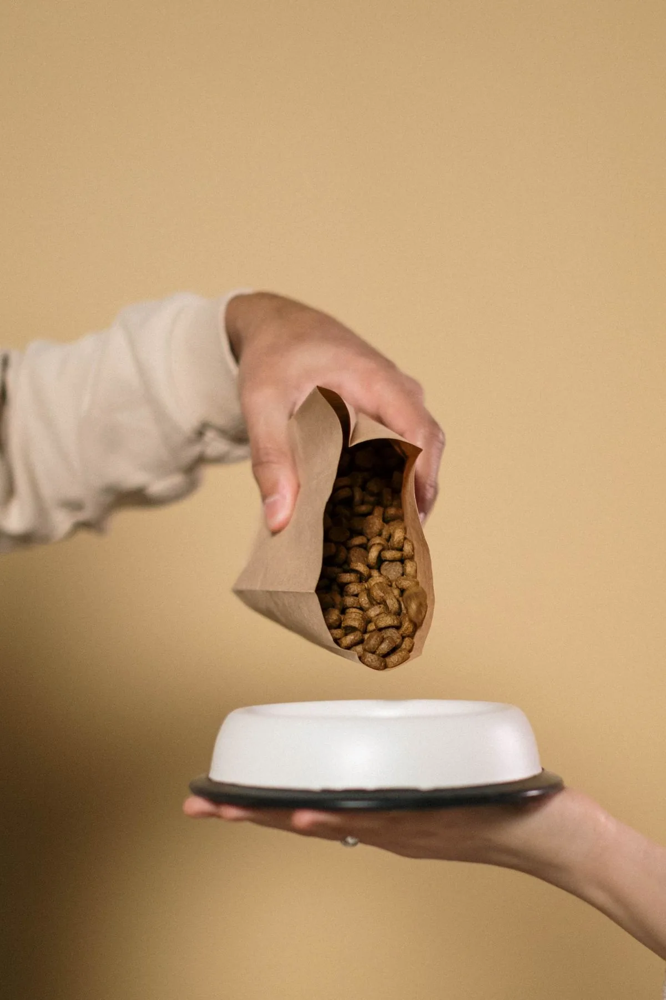

Cho chó mèo ăn đúng lượng và đổi sang thức ăn mới không rối loạn tiêu hóa
Cho chó hay mèo ăn bao nhiêu là đủ? Đây là câu hỏi mà hầu như người mới nuôi nào cũng đặt ra, và cũng là câu hỏi rất khó trả lời bằng một con số chung. Một chú chó trưởng thành đã triệt sản, ít vận động, sống trong căn hộ sẽ cần ít thức ăn hơn nhiều so với một chú chó cùng cân nặng nhưng chạy nhảy cả ngày. Một chú mèo con đang lớn cần nhiều năng lượng hơn một chú mèo già chỉ quanh quẩn trong nhà. Vì vậy, bài viết này không đưa ra một bảng khẩu phần cố định cho mọi con vật. Thay vào đó, bài viết hướng dẫn cách đọc hướng dẫn trên bao bì thức ăn, cách theo dõi cân nặng và thể trạng của pet, cách chia bữa ăn trong ngày, và cách đổi sang một loại thức ăn mới từ từ để bụng của pet có thời gian làm quen.
Vì sao không có một lượng ăn chung cho mọi chó mèo
Thức ăn cho chó mèo bán trên thị trường thường in một bảng hướng dẫn cho ăn theo cân nặng. Bảng này là điểm bắt đầu hữu ích, nhưng nó chỉ tính cho một con vật "trung bình" ở một mức vận động trung bình. Trên thực tế, nhu cầu năng lượng của mỗi con vật còn phụ thuộc vào tuổi, giống, cân nặng hiện tại, tình trạng đã triệt sản hay chưa, mức vận động hằng ngày, nhiệt độ môi trường sống và tình trạng sức khỏe.
Chó con và mèo con đang lớn cần nhiều năng lượng hơn trên mỗi cân nặng so với chó mèo trưởng thành, vì cơ thể chúng vừa duy trì hoạt động hằng ngày vừa xây dựng xương, cơ và các cơ quan. Chó mèo già thường vận động ít hơn, trao đổi chất chậm lại, nên thường cần ít calo hơn thời còn trẻ, nhưng lại có thể cần thức ăn dễ tiêu hơn. Một con vật đã triệt sản thường dễ tăng cân hơn, vì vậy lượng ăn có thể cần giảm so với trước khi triệt sản. Một con vật làm việc, chạy nhảy nhiều, hoặc sống ngoài trời lạnh sẽ tiêu hao nhiều năng lượng hơn một con vật chỉ ở trong nhà.
Vì có quá nhiều yếu tố thay đổi, cách làm đúng không phải là tìm một con số duy nhất trên mạng rồi áp cho pet của mình, mà là bắt đầu từ hướng dẫn trên bao bì, theo dõi cân nặng và thể trạng trong vài tuần, rồi điều chỉnh dần. Nếu pet tăng cân đều mà không do đang lớn, hãy giảm nhẹ lượng ăn và hỏi bác sĩ thú y. Nếu pet gầy đi, ăn hết sạch mà vẫn có vẻ đói, hoặc lông xơ xác, hãy hỏi bác sĩ thú y thay vì tự tăng khẩu phần thật nhiều trong một lần.
Bác sĩ thú y là người quyết định lượng ăn cụ thể cho từng con vật, vì bác sĩ đã khám trực tiếp, biết cân nặng, tuổi, giống và tình trạng sức khỏe của pet. Bài viết này chỉ giúp người nuôi hiểu nguyên tắc chung và biết cách theo dõi tại nhà để trao đổi với bác sĩ thú y cho chính xác.
Đọc hướng dẫn trên bao bì như thế nào
Trên bao bì thức ăn cho chó mèo thường có hai thông tin quan trọng. Thứ nhất là dòng chữ cho biết thức ăn đó có phải là thức ăn đầy đủ và cân bằng hay không, và phù hợp với giai đoạn sống nào: chó mèo con đang lớn, chó mèo trưởng thành, hay mọi giai đoạn sống. Chỉ nên chọn thức ăn ghi rõ phù hợp với độ tuổi và giai đoạn sống của pet. Thức ăn cho chó con không dùng chung cho chó trưởng thành một cách tùy tiện, và ngược lại, vì nhu cầu dinh dưỡng ở hai giai đoạn khác nhau.
Thứ hai là bảng hướng dẫn cho ăn theo cân nặng. Bảng này thường ghi lượng thức ăn mỗi ngày, ví dụ bao nhiêu gam hoặc bao nhiêu cốc cho một con vật nặng bao nhiêu kilôgam. Hãy dùng con số này làm điểm bắt đầu, không phải là con số bất di bất dịch. Trong hai đến bốn tuần đầu cho ăn theo bảng, hãy cân pet nếu có thể, hoặc ít nhất ghi lại cảm nhận khi sờ vào sườn và nhìn từ trên xuống, rồi so sánh với lần trước. Nếu cân nặng ổn định và thể trạng tốt, giữ nguyên lượng ăn. Nếu cân nặng tăng nhanh trong khi pet không còn đang lớn, giảm lượng ăn một chút và theo dõi tiếp. Nếu cân nặng giảm, hãy hỏi bác sĩ thú y trước khi tăng khẩu phần.
Một sai lầm thường gặp là đong thức ăn bằng mắt hoặc bằng một chiếc cốc, bát bất kỳ trong nhà. Cùng một chiếc cốc, lần múc đầy khác lần múc vơi, và hạt thức ăn to hay nhỏ cũng làm lượng thực tế thay đổi. Cách đơn giản và chính xác hơn là dùng cốc đong có vạch, tốt nhất là cân bằng cân nhà bếp trong vài ngày đầu để biết một khẩu phần trông như thế nào, sau đó mới dùng cốc đong quen thuộc. Việc này chỉ mất vài phút mỗi ngày nhưng giúp lượng ăn ổn định hơn nhiều.
Một sai lầm khác là cho ăn theo cảm giác "nó nhìn mình tội nghiệp quá". Chó mèo rất giỏi xin ăn bằng ánh mắt, tiếng kêu và cử chỉ. Nhưng cho thêm thức ăn ngoài khẩu phần mỗi khi pet xin ăn là cách nhanh nhất khiến pet thừa cân mà người nuôi không nhận ra. Nếu pet xin ăn giữa các bữa, hãy kiểm tra xem có phải pet đang buồn chán, khát nước, hay chỉ muốn được chơi cùng hay không, thay vì cho ăn ngay.
Chia bữa ăn trong ngày ra sao
Chó mèo trưởng thành thường ăn tốt với hai bữa chính mỗi ngày, vào buổi sáng và buổi tối, vào giờ tương đối cố định. Lịch ăn cố định giúp hệ tiêu hóa của pet làm việc đều đặn, giúp người nuôi dễ nhận ra khi pet bỏ ăn — một dấu hiệu quan trọng cần chú ý — và giúp việc đi vệ sinh cũng đều đặn hơn.
Chó con và mèo con cần ăn nhiều bữa nhỏ hơn trong ngày vì dạ dày của chúng còn nhỏ, không chứa được nhiều thức ăn trong một lần, trong khi nhu cầu năng lượng lại cao. Khi pet còn nhỏ, người nuôi thường chia thức ăn thành ba đến bốn bữa nhỏ. Khi pet lớn dần, số bữa giảm dần xuống hai bữa mỗi ngày. Việc chuyển số bữa cũng nên làm từ từ, không đổi đột ngột trong một ngày.
Với mèo, có một điểm khác chó: nhiều mèo thích ăn lai rai nhiều lần trong ngày thay vì ăn hai bữa lớn. Người nuôi có thể chia khẩu phần hằng ngày của mèo thành nhiều phần nhỏ, hoặc dùng đồ chơi đựng thức ăn để mèo phải tìm kiếm, vừa ăn chậm hơn vừa vận động nhẹ. Tuy nhiên, không nên để thức ăn khô đầy bát cả ngày mà không đo lường, vì như vậy rất khó biết mèo đã ăn bao nhiêu, và mèo dễ ăn quá mức rồi tăng cân dần dần. Dù cho ăn theo cách nào, tổng lượng thức ăn trong một ngày vẫn phải được đo trước.
Nước uống cũng là một phần của bữa ăn. Luôn để nước sạch sẵn cho pet uống cả ngày, đặt bát nước ở nơi yên tĩnh, dễ tới, và thay nước mỗi ngày. Mèo thường thích nước mới thay và có thể uống ít nếu bát nước đặt ngay cạnh khay vệ sinh hoặc cạnh bát thức ăn có mùi nặng. Nếu pet uống nước ít hơn hẳn bình thường, hoặc uống nhiều hơn hẳn bình thường trong nhiều ngày, hãy ghi lại và hỏi bác sĩ thú y, vì thay đổi thói quen uống nước có thể là dấu hiệu sức khỏe cần được kiểm tra.
Cách theo dõi cân nặng và thể trạng tại nhà
Cân nặng là thước đo khách quan nhất để biết lượng ăn hiện tại có phù hợp hay không. Nếu có cân nhà bếp hoặc cân người, người nuôi có thể cân pet định kỳ, ví dụ hai tuần một lần, vào cùng một thời điểm trong ngày và ghi lại vào sổ theo dõi. Với chó nhỏ và mèo, có thể cân người nuôi bế pet rồi trừ đi cân nặng của người nuôi. Với chó lớn, cần cân ở phòng khám thú y hoặc nơi có cân lớn.
Ngoài cân nặng, thể trạng — tức là lượng mỡ bao phủ cơ thể — cũng quan trọng không kém. Một cách kiểm tra đơn giản mà bác sĩ thú y thường hướng dẫn là sờ vào sườn của pet: khi đặt bàn tay lên sườn, người nuôi nên sờ thấy xương sườn dưới một lớp mỡ mỏng, không phải ấn mạnh mới thấy, cũng không phải xương sườn nhô rõ dưới da. Nhìn từ trên xuống, phần eo sau sườn nên thu hẹp nhẹ so với lồng ngực. Nhìn từ bên hông, bụng nên hóp lên nhẹ từ ngực về phía sau, không thõng xuống.
Bảng dưới đây là khung tự làm để người nuôi ghi lại và theo dõi tại nhà. Bảng này không thay thế việc cân và khám của bác sĩ thú y, mà chỉ giúp người nuôi có dữ liệu cụ thể khi trao đổi với bác sĩ.
| Mục theo dõi | Cách kiểm tra tại nhà | Khi nào cần hỏi bác sĩ thú y |
|---|---|---|
| Cân nặng | Cân hai tuần một lần, ghi lại con số và ngày cân | Tăng hoặc giảm nhanh trong hai đến bốn tuần mà không rõ nguyên nhân |
| Sườn | Sờ nhẹ: xương sườn cảm nhận được dưới lớp mỡ mỏng | Không sờ thấy xương sườn, hoặc xương sườn nhô rõ dưới da |
| Eo nhìn từ trên | Eo sau sườn thu hẹp nhẹ so với lồng ngực | Không thấy eo, thân hình tròn đều từ ngực xuống hông |
| Bụng nhìn từ bên | Bụng hóp lên nhẹ từ ngực về sau | Bụng thõng xuống, hoặc bụng hóp sâu bất thường |
| Mức ăn | Ghi lượng thức ăn mỗi ngày trong một tuần | Ăn hết mà vẫn gầy đi, hoặc bỏ ăn trên một ngày |
| Phân | Ghi độ cứng, màu sắc, tần suất đi vệ sinh | Tiêu chảy kéo dài, phân có máu, hoặc táo bón nhiều ngày |
| Lông và da | Lông có bóng mượt không, da có khô hay ngứa không | Rụng lông nhiều thành mảng, da đỏ, có mùi lạ |
Nếu pet thừa cân, đừng vội cắt giảm khẩu phần thật mạnh trong một lần. Giảm đột ngột có thể khiến pet đói, quấy, và với mèo, việc nhịn ăn hoặc ăn quá ít trong thời gian dài là điều nguy hiểm, cần tránh. Cách an toàn hơn là giảm một lượng nhỏ, tăng vận động và chơi đùa nhẹ nhàng phù hợp với tuổi và sức khỏe, rồi cân lại sau hai đến bốn tuần. Bác sĩ thú y sẽ tư vấn mức giảm phù hợp cho từng con vật, đặc biệt khi pet đang có bệnh nền hoặc đang dùng thuốc.
Nếu pet thiếu cân, cũng đừng tự ý tăng khẩu phần gấp đôi. Pet gầy có thể do nhiều nguyên nhân, từ thức ăn không phù hợp, ký sinh trùng đường ruột, bệnh răng miệng khiến pet đau khi nhai, cho tới bệnh lý khác. Hãy đưa pet đi khám để bác sĩ tìm nguyên nhân trước khi đổi thức ăn hay tăng lượng ăn.
Đổi sang thức ăn mới: vì sao phải đổi từ từ
Có nhiều lý do khiến người nuôi cần đổi thức ăn cho pet: pet chuyển từ thức ăn cho chó mèo con sang thức ăn cho chó mèo trưởng thành, cửa hàng hết loại thức ăn cũ, bác sĩ thú y khuyên đổi sang loại phù hợp hơn với tình trạng sức khỏe, hoặc người nuôi muốn đổi sang một thương hiệu khác. Dù lý do là gì, nguyên tắc quan trọng nhất là đổi từ từ, không đổi đột ngột trong một bữa.
Dạ dày và ruột của chó mèo cần thời gian để làm quen với thành phần, tỷ lệ chất đạm, chất béo, chất xơ và độ ẩm mới. Khi đổi đột ngột, pet rất dễ bị rối loạn tiêu hóa: nôn, tiêu chảy, đầy hơi, bỏ ăn hoặc phân lỏng trong vài ngày. Điều này không có nghĩa là thức ăn mới xấu, mà chỉ là cơ thể pet chưa kịp thích nghi. Đổi từ từ giúp giảm hẳn nguy cơ này.
Theo American Kennel Club (AKC), đổi thức ăn đột ngột có thể gây nôn, tiêu chảy và chán ăn, vì vậy nên đổi dần để hệ tiêu hóa có thời gian thích nghi — lý tưởng là trong 5 đến 7 ngày. Một lịch đổi tham khảo theo đúng AKC như sau: ngày 1 trộn 25% thức ăn mới với 75% thức ăn cũ; ngày 3 trộn một nửa mới với một nửa cũ; ngày 5 trộn 75% mới với 25% cũ; ngày 7 cho ăn hoàn toàn thức ăn mới. Chó mèo có dạ dày nhạy cảm, dị ứng thức ăn hoặc bệnh tiêu hóa có thể cần đổi chậm hơn — theo nguyên tắc chung (lịch AKC là lịch cho chó), mèo dạ dày nhạy cảm cũng nên đổi chậm hơn và hỏi bác sĩ thú y nếu vẫn rối loạn sau khi đã đổi dần. Trong suốt quá trình đổi, hãy theo dõi phân, mức ăn và tinh thần của pet mỗi ngày. Nếu pet tiêu chảy nhiều, nôn nhiều lần, hoặc bỏ ăn, hãy quay lại tỷ lệ trước đó trong vài ngày, hoặc dừng việc đổi và hỏi bác sĩ thú y.
Với chó mèo con, chó mèo già, hoặc pet đang ốm, việc đổi thức ăn cần thận trọng hơn. Những con vật này nhạy cảm hơn với thay đổi thức ăn, vì vậy thời gian đổi có thể cần kéo dài hơn, và bác sĩ thú y nên được hỏi ý kiến trước khi đổi. Nếu pet đang dùng thức ăn theo chỉ định của bác sĩ thú y vì một bệnh cụ thể, tuyệt đối không tự đổi sang loại khác khi chưa hỏi bác sĩ, vì thức ăn đó là một phần của việc chăm sóc sức khỏe cho pet.
Trong những ngày đầu đổi thức ăn, đừng đồng thời đổi thêm thứ khác, ví dụ đổi cả loại bánh thưởng, đổi giờ ăn, đổi chỗ ăn và đổi thức ăn cùng lúc. Nếu pet bị rối loạn tiêu hóa, người nuôi sẽ không biết nguyên nhân là do đâu. Hãy đổi một thứ trong một thời điểm, theo dõi vài ngày, rồi mới đổi thứ tiếp theo.
Những lỗi thường gặp khi cho chó mèo ăn
Lỗi đầu tiên là cho ăn quá nhiều vì thương pet. Nhiều người nuôi nghĩ rằng cho ăn nhiều là thương pet, nhưng thừa cân lại khiến pet dễ mệt, khó vận động, và tăng gánh nặng cho khớp và tim mạch. Việc kiểm soát cân nặng từ sớm dễ hơn nhiều so với việc giảm cân khi pet đã béo phì.
Lỗi thứ hai là cho pet ăn thức ăn thừa của người trong bữa cơm. Ngoài những món gây độc đã nêu trong bài viết về thức ăn của người — người nuôi chỉ cần nhớ một dòng ở đây và xem danh sách đầy đủ trong bài đó — thức ăn của người thường nhiều muối, nhiều dầu mỡ và nhiều gia vị, không phù hợp với hệ tiêu hóa của chó mèo. Hơn nữa, thức ăn thừa thường không được tính vào tổng lượng calo hằng ngày, nên pet rất dễ ăn vượt mức mà người nuôi không hay biết. Theo hướng dẫn của Hiệp hội Phòng chống Ngược đãi Động vật Hoa Kỳ (ASPCA), bánh mì đã nướng cho vào bữa ăn của pet không nên vượt quá 5 đến 10% lượng calo hằng ngày (mốc này gắn với mục bột men nở trong hướng dẫn của ASPCA; quy tắc 10% chung cho bánh thưởng xem Bài 9). Phần lớn khẩu phần vẫn phải là thức ăn đầy đủ và cân bằng dành riêng cho chó hoặc mèo.
Lỗi thứ ba là thay đổi thức ăn liên tục vì pet có vẻ chán ăn. Chó mèo có thể chán ăn một bữa vì nhiều lý do: thời tiết nóng, ít vận động, đang mọc răng, hoặc chỉ đơn giản là không đói. Việc đổi thức ăn mới mỗi lần pet ăn ít sẽ tạo thành vòng lặp: pet chưa kịp quen loại này đã phải quen loại khác, bụng càng dễ rối loạn, và pet càng kén ăn hơn. Trước khi đổi thức ăn vì pet chán ăn, hãy kiểm tra xem pet có dấu hiệu bất thường khác không — bỏ ăn kèm nôn, tiêu chảy, mệt lả, sốt — và hỏi bác sĩ thú y nếu tình trạng kéo dài.
Lỗi thứ tư là cho chó ăn thức ăn của mèo và ngược lại. Thức ăn cho chó và thức ăn cho mèo được làm khác nhau vì nhu cầu dinh dưỡng của hai loài khác nhau. Mèo cần một số chất dinh dưỡng mà cơ thể chúng không tự tổng hợp đủ, trong khi thức ăn cho chó không đáp ứng đủ nhu cầu đó cho mèo nếu dùng lâu dài. Ngược lại, thức ăn cho mèo thường giàu năng lượng và chất đạm hơn mức chó cần, nên chó ăn thức ăn của mèo lâu dài dễ thừa cân. Trong nhà nuôi cả chó và mèo, hãy cho mỗi con ăn ở khu vực riêng của mình, đặt bát ăn của mèo ở nơi chó không với tới nếu cần.
Lỗi thứ năm là quên tính bánh thưởng và đồ ăn vặt vào tổng lượng ăn. Một vài miếng bánh thưởng nhỏ trong ngày tưởng như không đáng kể, nhưng cộng dồn lại có thể chiếm một phần đáng kể trong tổng calo hằng ngày, đặc biệt với mèo và chó nhỏ. Quy tắc chung là bánh thưởng và các món ăn thêm chỉ nên chiếm tối đa khoảng 10% tổng calo hằng ngày, phần còn lại vẫn là thức ăn đầy đủ và cân bằng. Cách làm đơn giản là trừ lượng bánh thưởng ra khỏi khẩu phần chính trong ngày, thay vì cho thêm ngoài khẩu phần. Chi tiết về cách chọn và tính bánh thưởng có trong bài viết riêng về bánh thưởng của website này.
Checklist trước khi đổi thức ăn cho pet
- [ ] Hỏi bác sĩ thú y xem pet có cần đổi thức ăn hay không, và loại nào phù hợp với tuổi, cân nặng và sức khỏe hiện tại.
- [ ] Mua đủ thức ăn cũ cho ít nhất 7 ngày đổi dần (dự phòng thêm vài ngày cho pet dạ dày nhạy cảm), đừng để hết thức ăn cũ giữa chừng.
- [ ] Đọc nhãn thức ăn mới: phù hợp với chó hay mèo, giai đoạn sống nào, hướng dẫn cho ăn ban đầu là bao nhiêu.
- [ ] Chuẩn bị lịch đổi 5 đến 7 ngày theo AKC: ghi rõ tỷ lệ trộn mỗi giai đoạn và dán ở nơi cho pet ăn.
- [ ] Theo dõi mỗi ngày: pet ăn hết không, phân có bình thường không, có nôn không, tinh thần có tốt không.
- [ ] Nếu pet tiêu chảy nhiều, nôn nhiều lần hoặc bỏ ăn, quay lại tỷ lệ trước đó và hỏi bác sĩ thú y.
- [ ] Sau khi đổi xong, cân lại pet sau hai đến bốn tuần để xem lượng ăn mới có phù hợp không.
Khi nào cần đưa pet đi khám thay vì tự điều chỉnh thức ăn
Hãy liên hệ bác sĩ thú y ngay nếu pet bỏ ăn hoàn toàn trên một ngày, đặc biệt là mèo, vì mèo nhịn ăn có thể gặp vấn đề sức khỏe nghiêm trọng. Cũng cần đi khám ngay nếu pet nôn nhiều lần trong ngày, tiêu chảy ra máu, phân đen, bụng chướng, mệt lả, khó thở, hoặc nghi ngờ pet đã ăn phải chất độc. Những dấu hiệu này không nên tự xử lý tại nhà bằng cách đổi thức ăn hay cho uống thuốc của người.
Ngoài ra, hãy hỏi bác sĩ thú y trong buổi khám định kỳ về lượng ăn hiện tại của pet: mang theo tên loại thức ăn, lượng ăn mỗi ngày, loại bánh thưởng và tần suất cho bánh thưởng, cùng sổ cân nặng nếu có. Bác sĩ sẽ dựa vào cân nặng, thể trạng và kết quả khám để tư vấn lượng ăn phù hợp, thay vì người nuôi phải đoán.
Kết luận
Cho chó mèo ăn đúng lượng không phải là tìm một con số cố định, mà là một quá trình theo dõi và điều chỉnh. Bắt đầu từ hướng dẫn trên bao bì, đong thức ăn bằng dụng cụ đo thay vì bằng mắt, chia bữa ăn đều đặn trong ngày, cân và kiểm tra thể trạng định kỳ, tính cả bánh thưởng vào tổng lượng ăn, và đổi thức ăn từ từ trong 5 đến 7 ngày khi cần đổi (pet dạ dày nhạy cảm cần chậm hơn, theo AKC). Khi pet thừa cân hay thiếu cân, khi pet bỏ ăn, nôn hay tiêu chảy kéo dài, hãy hỏi bác sĩ thú y thay vì tự điều chỉnh mạnh tay. Một khẩu phần vừa đủ, ổn định và phù hợp với từng con vật sẽ giúp pet khỏe mạnh lâu dài hơn bất kỳ loại thức ăn đắt tiền nào mà lượng ăn lại thất thường.

Nguồn tham khảo
- Hiệp hội Phòng chống Ngược đãi Động vật Hoa Kỳ (ASPCA) — People Foods to Avoid Feeding Your Pets. https://www.aspcapro.org/resource/people-foods-pets-should-never-eat
- Hiệp hội Thú y Hoa Kỳ (AVMA) — Pet Ownership Guidelines. https://www.avma.org/resources-tools/avma-policies/pet-ownership-guidelines
- American Kennel Club (AKC) — How to Switch Dog Foods: Transitioning Your Dog's Diet (cập nhật 17/04/2026, đã mở trực tiếp ngày 23/11/2026: đổi thức ăn đột ngột có thể gây nôn, tiêu chảy, chán ăn; đổi dần lý tưởng trong 5–7 ngày với lịch ngày 1: 25% mới, ngày 3: 50%, ngày 5: 75%, ngày 7: 100%; chó dạ dày nhạy cảm cần đổi chậm hơn). https://www.akc.org/expert-advice/nutrition/right-way-switch-dog-foods/